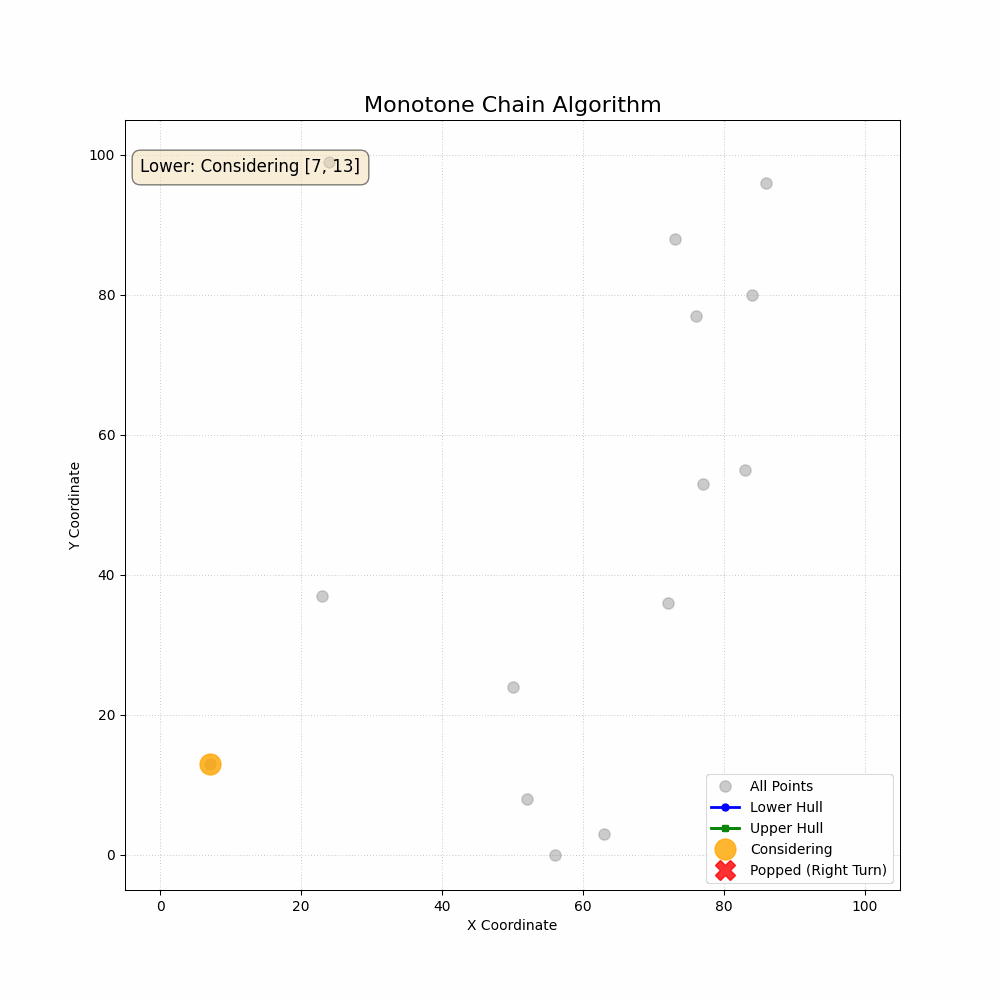

计算几何题目
如何判断一个点在多边形内部还是多边形外部？
射线法：
从一个点触发的射线，和一个多边形的相交次数如果是奇数，则在多边形内，否则在多边形外
1
2
3
4
5
6
7
8
9
10
11
12
13
14
15
16
17
18
19
20
21
22
23
24
25
26
27
28
29
30
31
32
33
34
35
36
37
38
39
40
41
42
43
44
45
46
47
48
49
50
51
52
53
54
55
56
57
58
59
60
61
62
63
64
65
66
67
68
69
70
71
72
73
74
75
76
77
78
79
80
81
82
83
84
85
86
87
88
89
90
91
92
93
94
95
96
97
98
99
100
101
102
103
104
105
106
107
108
109
110
111
|
bool checkPointInLineSegment(const Vec2d& input_point, const Vec2d& line_start, const Vec2d& line_end) {
Vec2d line_vec = line_end - line_start;
Vec2d p_vec = input_point - line_start;
constexpr double EPSILON = 1e-9;
if (p_vec.norm() <= EPSILON || line_vec.norm() <= EPSILON) return true;
double cross_product = crossProduct(line_vec, p_vec);
if (fabs(cross_product) <= EPSILON) {
double inner_product = innerProduct(line_vec, p_vec);
double project_line = inner_product / line_vec.norm();
if (project_line >= 0 && project_line <= line_vec.norm()) {
return true;
}
}
return false;
}
bool getIntersectPointFromLine(const Vec2d& Line1_start, const Vec2d& Line1_end, const Vec2d& Line2_start, const Vec2d& Line2_end, Vec2d& intersect_point, double& t_1, double& t_2) {
Vec2d dir_1 = Line1_end - Line1_start;
Vec2d dir_2 = Line2_end - Line2_start;
double cross_prod = crossProduct(dir_1, dir_2);
constexpr double EPSILON = 1e-9;
if (fabs(cross_prod) <= EPSILON) return false;
t_1 = (crossProduct(Line2_start, dir_2) - crossProduct(Line1_start, dir_2)) / (crossProduct(dir_1, dir_2));
t_2 = (crossProduct(Line1_start, dir_1) - crossProduct(Line2_start, dir_1)) / (crossProduct(dir_2, dir_1));
Vec2d intersection_point = Line1_start + t_1 * dir_1;
return true;
}
bool checkPointInPolygon(const Vec2d& input_point, const std::vector<Vec2d>& input_polygon) {
bool inPolygon = false;
for (int i = 0; i < input_polygon.size(); i++) {
const auto& start_point = input_polygon[i];
const auto& end_point = input_polygon[(i + 1) % n];
if (checkPointInLineSegment(input_point,start_point, end_point)) return true;
double current_start_y = start_point.y();
double current_end_y = end_point.y();
if ((current_start_y - input_point.y()) * (current_end_y - input_point.y()) < 0) {
double t_1 = -1;
double t_2 = -1;
if (getIntersectPointFromLine(input_point, input_point + Vec2d(1, 0), start_point, end_point, intersect_point, t_1, t_2) && t_1 > 0) {
inPolygon = !inPolygon;
}
}
}
return inPolygon;
}
bool checkPointInPolygon(const Vec2d& input_point, const std::vector<Vec2d>& input_polygon) {
bool inside = false;
int n = input_polygon.size();
if (n == 0) return false;
double px = input_point.x();
double py = input_point.y();
for (int i = 0; i < n; i++) {
const Vec2d& P1 = input_polygon[i];
const Vec2d& P2 = input_polygon[(i + 1) % n];
double p1x = P1.x(), p1y = P1.y();
double p2x = P2.x(), p2y = P2.y();
if (checkPointInLineSegment(input_point, P1, P2)) {
return true;
}
if (fabs(p1y - p2y) <= std::numeric_limits<double>::epsilon()) {
continue;
}
bool straddles_ray_y = ((p1y <= py && p2y > py) || (p1y > py && p2y <= py));
if (straddles_ray_y) {
double x_intersect = p1x + (py - p1y) * (p2x - p1x) / (p2y - p1y);
if (x_intersect > px) {
inside = !inside;
}
}
}
return inside;
}
|
计算射线到圆的交点
$$Line: P = P_0 + t P_1$$
$$Circle: P\cdot P = R^2$$
$$P_0^2 + 2tP_1\cdot P_0 + t^2P_1\cdot P_1 = R^2$$
$$t^2P_1\cdot P_1 + 2tP_1\cdot P_0 + P_0^2 - R^2 = 0$$
$$t = \frac{ -2P_1\cdot P_0 \pm \sqrt{(4|P_1\cdot P_0|^2 - 4|P_1|^2(|P_0|^2) - R^2)} }{2P_1\cdot P_1}$$
$$t = \frac{ -P_1\cdot P_0 \pm \sqrt{(|P_1\cdot P_0|^2 - |P_1|^2(|P_0|^2) - R^2)} }{P_1\cdot P_1}$$
此时仅需要计算t>0的时候的交点即可
1
2
3
4
5
6
7
8
9
10
11
12
13
14
15
16
17
18
19
20
21
22
23
24
25
26
27
28
29
30
31
32
33
34
35
36
37
38
39
40
41
42
43
| struct Vec2d {
double x,y;
Vec2d(double x = 0, double y = 0) : x(x), y(y){};
Vec2d operator-(const Vec2d& other) const {return Vec2d(x - other.x, y - other.y );}
Vec2d operator+(const Vec2d& other) const {return Vec2d(x + other.x, y + other.y );}
double operator*(const Vec2d& other) const {return x * other.x + y * other.y;}
double operator^(const Vec2d& other) const {return x * other.y - y * other.x;}
double norm() const {return sqrt(x * x + y * y);}
Vec2d operator*(double s) const { return Vec2d(x * s, y * s); }
}
Vec2d operator*(double s, const Vec2d& v) {
return v * s;
}
double innerProd(Vec2d p1, Vec2d p2) {
return p1.x * p2.x + p1.y * p2.y;
}
vector<Vec2d> getIntersectPointFromLineCircle(Vec2d line_start, Vec2d line_dir, Vec2d circle_center, double circle_radius) {
Vec2d P_0 = line_start - circle_center;
double P_0dotDir = P_0 * line_dir;
double A = line_dir.norm() * line_dir.norm() ;
double B = 2 * P_0dotDir;
double C = P_0.norm() * P_0.norm()- circle_radius * circle_radius;
vector<Vec2d> res;
double delta = B*B - 4*A*C;
if (delta < 0) return {};
double t_1 = -B / (2*A) + sqrt(delta)/ (2*A);
double t_2 = -B / (2*A) - sqrt(delta)/ (2*A);
if (t_1 > 0) {
res.emplace_back(line_start + t_1 * line_dir);
}
if (t_2 > 0) {
res.emplace_back(line_start + t_2 * line_dir);
}
return res;
}
|
如何获取一群点的最小外接凸包
LeetCode 587. 安装栅栏 (Erect the Fence)
Andrew算法
将所有点按x坐标升序排序（x相同则按y升序）。
构建上下凸包：分两次遍历排序后的点，分别构建下凸包和上凸包。正向遍历时，构建下凸包时若当前点与栈顶两点形成非左转（叉积小于0），则弹出栈顶点，直到满足左转。
构建上凸包时，反向遍历，若当前点与栈顶两点形成非左转（叉积小于0），则弹出栈顶点，直到满足左转。
合并结果：将下凸包和上凸包合并，去除重复顶点（如首尾点），得到最终凸包。

先给出无序的合并，很简单，直接利用set
1
2
3
4
5
6
7
8
9
10
11
12
13
14
15
16
17
18
19
20
21
22
23
24
25
26
27
28
29
30
31
32
33
34
35
36
37
38
39
40
41
42
43
44
45
46
47
48
49
50
51
52
53
54
55
56
57
58
59
60
61
62
63
64
65
66
67
68
69
70
71
72
73
74
| class Solution {
public:
double crossProd(const vector<int>& p1, const vector<int>& p2) {
return p1[0] * p2[1] - p1[1] * p2[0];
}
vector<vector<int>> outerTrees(vector<vector<int>>& trees) {
sort(trees.begin(), trees.end(), [](const vector<int>& p1, const vector<int>& p2){
if (p1[0] == p2[0]) return p1[1] < p2[1];
return p1[0] < p2[0];
});
vector<vector<int>> upper_hull;
vector<vector<int>> lower_hull;
for (const auto& tree : trees) {
int n = lower_hull.size();
if (n < 2) {
lower_hull.emplace_back(tree);
continue;
}
while (lower_hull.size() >= 2) {
n = lower_hull.size();
const auto& point_1 = lower_hull[n - 2];
const auto& point_2 = lower_hull[n - 1];
vector<int> vec_1{point_2[0] - point_1[0] , point_2[1] - point_1[1]};
vector<int> vec_2{tree[0] - point_2[0] , tree[1] - point_2[1]};
double cp = crossProd(vec_1, vec_2);
if (cp < 0) {
lower_hull.pop_back();
} else {
break;
}
}
lower_hull.emplace_back(tree);
}
for (auto iter = trees.rbegin(); iter != trees.rend(); iter++) {
const auto tree = *iter;
int n = upper_hull.size();
if (n < 2) {
upper_hull.emplace_back(tree);
continue;
}
while (upper_hull.size() >= 2) {
n = upper_hull.size();
const auto& point_1 = upper_hull[n - 2];
const auto& point_2 = upper_hull[n - 1];
vector<int> vec_1{point_2[0] - point_1[0] , point_2[1] - point_1[1]};
vector<int> vec_2{tree[0] - point_2[0] , tree[1] - point_2[1]};
double cp = crossProd(vec_1, vec_2);
if (cp < 0) {
upper_hull.pop_back();
} else {
break;
}
}
upper_hull.emplace_back(tree);
}
std::set<vector<int>> hull_set;
for (const auto& p : lower_hull) {
hull_set.insert(p);
}
for (const auto& p : upper_hull) {
hull_set.insert(p);
}
vector<vector<int>> res(hull_set.begin(), hull_set.end());
return res;
}
};
|
如果是有序的合并呢？
回顾我们拥有的数据
我们有两个 vector，它们是按顺序构建的：
lower_hull：包含了从最左点到最右点的所有下凸包顶点（按 X 坐标递增）。
upper_hull：包含了从最右点到最左点的所有上凸包顶点（按 X 坐标递减）。
识别重复的点
lower_hull 和 upper_hull 共享了两个端点：
最左点：lower_hull[0] 和 upper_hull.back() 是同一个点。
最右点：lower_hull.back() 和 upper_hull[0] 是同一个点。
合并策略（生成逆时针链）
我们的目标是创建一个 res 向量，它从最左点开始，沿着“下栅栏”走到最右点，然后沿着“上栅栏”走回最左点。
1
2
3
4
5
6
7
8
9
10
11
12
13
|
vector<vector<int>> res = lower_hull;
if (res.size() == trees.size()) {
return res;
}
for (int i = 1; i < upper_hull.size() - 1; i++) {
res.push_back(upper_hull[i]);
}
return res;
|
算法的证明
这个算法（也称为 Andrew’s Algorithm）的正确性证明，依赖于两个核心思想：
- 分治法 (Divide and Conquer)：通过排序，我们把一个复杂的 2D 凸包问题，拆解成了两个更简单的一维（1D-like）问题：上凸包 (Upper Hull) 和 下凸包 (Lower Hull)。
- 凸性与转向 (Convexity and Turns)：我们利用叉积来强制维持凸包的“凸”性。
1. 核心思想：排序即“分治”
我们首先对所有点按 X 坐标（X 相同则按 Y 坐标）排序。
- 最左点 (P_min) 和 最右点 (P_max) 一定是凸包的顶点。
- 凸包就是从
P_min 到 P_max 的“上半部分”（上凸包），和从 P_min 到 P_max 的“下半部分”（下凸包）组成的。
证明的第一步：
如果我们能分别正确地找到“上凸包”和“下凸包”，那么将它们合并（并去除重复的 P_min 和 P_max）就一定能得到完整的凸包。
所以，问题被简化为：如何证明你的“扫描”过程能正确找到下凸包（和上凸包）？
2. 证明的关键：为什么你的“弹出”规则是正确的？
我们来分析“下凸包” (L-to-R) 和“上凸包” (R-to-L) 的构建过程。
两个循环都使用了相同的规则： if (cp < 0) { pop_back(); }
cp < 0 意味着 右转 (Right Turn)。cp > 0 意味着 左转 (Left Turn)。cp == 0 意味着 共线 (Collinear)。
规则是：“只要形成右转，就弹出栈顶的点”。
情景一：构建 lower_hull (从左到右 L-to-R)
- 目标：我们要构建一个“下栅栏”，所有点都必须在这个栅栏的上方或线上。
- 特性：一个正确的“下栅栏”，从左到右看，它只能向左转或保持直线。
- 例子：
A=(0,0), B=(1,-1), C=(2,0)- 这是一个左转 (
cp > 0)。点 B 在 A-C 连线的下方。
- 这形成了一个“凹陷”，是“下栅栏”的有效部分。
- 你的代码：
cp > 0，不满足 if (cp < 0)，执行 break。保留 B。正确！
- 关键情况（右转）：
A=(0,0), B=(1,1), C=(2,0)- 这是一个右转 (
cp < 0)。点 B 在 A-C 连线的上方。
B 点违反了“下栅栏”的定义（它跑到了“栅栏”的上方）。B 点不可能是下凸包的一部分。- 代码：
cp < 0，满足 if (cp < 0)。弹出 B。正确！
下凸包证明小结：
在 L-to-R 扫描中，while (cp < 0) { pop_back() } 这个规则，会系统性地移除所有“凸起”在下栅栏上方的点，只保留那些形成“左转”或“共线”的点。这精确地构建了下凸包。
情景二：构建 upper_hull (从右到左 R-to-L)
- 目标：我们要构建一个“上栅栏”，所有点都必须在这个栅栏的下方或线上。
- 特性：一个正确的“上栅栏”，从右到左看，它也只能向左转或保持直线（相对于 R-to-L 的路径）。
- 例子：
A=(4,2), B=(3,3), C=(2,2)vec_AB = [-1, 1], vec_BC = [-1, -1]- 这是一个左转 (
cp = (-1*-1) - (1*-1) = 2 > 0)。
- 点
B 在 A-C 连线的上方。这是“上栅栏”的有效部分。
- 你的代码：
cp > 0，不满足 if (cp < 0)，执行 break。保留 B。正确！
- 关键情况（右转）：
A=(4,2), B=(3,1), C=(2,2)vec_AB = [-1, -1], vec_BC = [-1, 1]- 这是一个右转 (
cp = (-1*1) - (-1*-1) = -2 < 0)。
- 点
B 在 A-C 连线的下方。
B 点违反了“上栅栏”的定义（它“凹陷”了下去）。B 点不可能是上凸包的一部分。- 代码：
cp < 0，满足 if (cp < 0)。弹出 B。正确！
上凸包证明小结：
在 R-to-L 扫描中，while (cp < 0) { pop_back() } 这个规则，会系统性地移除所有“凹陷”在上栅栏下方的点，只保留那些形成“左转”或“共线”（相对于 R-to-L 路径）的点。这也精确地构建了上凸包。
3. 最终总结
- 排序正确地将问题分解为
lower_hull 和 upper_hull。
- 你的
while 循环（“弹出右转”）是一个**“凸性强制器”** (Convexity Enforcer)。
- 它在 L-to-R 扫描中，强制所有点都在“下栅栏”的上方（或线上）。
- 它在 R-to-L 扫描中，强制所有点都在“上栅栏”的下方（或线上）。
我写的是什么？我怎么不记得我为啥写下面的东西了？

超平面
法矢：$P_C(x_0)-x_0$
平面过中点$x_0/2+P_C(x_0)/2$
因此超平面方程为
$$(P_C(x_0)-x_0)^T(x-(1/2)(x_0+P_C(x_0)))$$
寻找两个凸集的距离
$$\begin{align} minimize\ \ \ \ \ &||\omega ||\\ subject\ to \ \ \ &f_i(x)\le 0,\\ &g_i(y) \le 0,\\ &x-y=\omega \end{align}$$
求对偶问题
对偶函数为
$$g(\lambda,z,\mu) = \inf_{x,y,\omega} (||\omega||+\Sigma_{i=1}^m \lambda_if_i(x)+\Sigma_{i=1}^p\mu_ig_i(y)+z^T(x-y-\omega))$$
这个式子可以变形为
$$\inf_{\omega} (||\omega||+z^T\omega) + \inf_{x}(\Sigma_{i=1}^m \lambda_if_i(x) + z^Tx) + \inf_{y}(\Sigma_{i=1}^p\mu_ig_i(y) - z^Ty)$$
三个变量的影响相互独立，对于$\omega$而言，如果$||z||<1$，第一项一定能找到一个合适的$\omega$使其最小，否则的话可以达到负无穷。
因此
$$g(\lambda,z,\mu) = \inf_{x}(\Sigma_{i=1}^m \lambda_if_i(x) + z^Tx) + \inf_{y}(\Sigma_{i=1}^p\mu_ig_i(y) - z^Ty)$$
可以得到对偶问题为
$$\begin{align} maximum \ \ \ \ \ \ \ \ & \inf_{x}(\Sigma_{i=1}^m \lambda_if_i(x) + z^Tx) + \inf_{y}(\Sigma_{i=1}^p\mu_ig_i(y) - z^Ty)\\ subject \ to\ \ \ \ \ \ \ \ & ||z||<1\\ &\lambda_i\ge 0,\mu_i\ge0 \end{align}$$